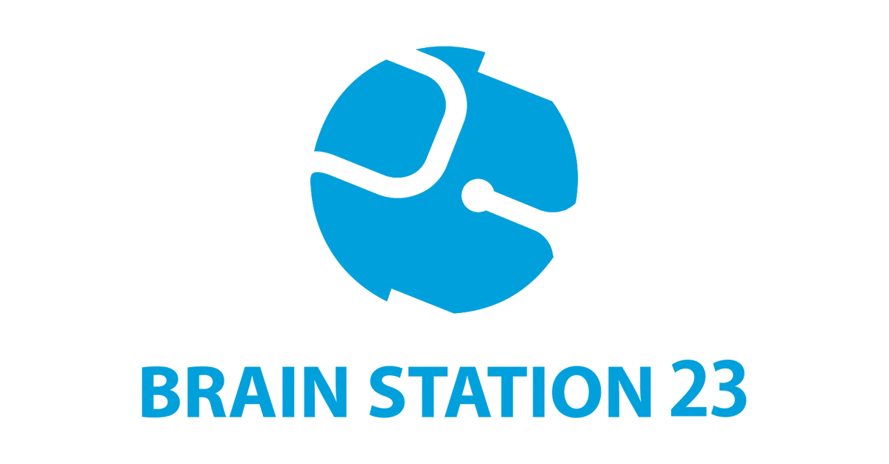

M.Sc. in Computer Science
2025 – 2026
University of Manitoba · Winnipeg, Canada
I am a graduate researcher at the MAMBA Lab, University of Manitoba, supervised by Dr. Shaowei Wang. My research investigates the impact of context-memory conflicts on Large Language Models in code generation. Before research, I spent over two and a half years as a software engineer at Brain Station 23, where I built backend systems for clients across Norway.
